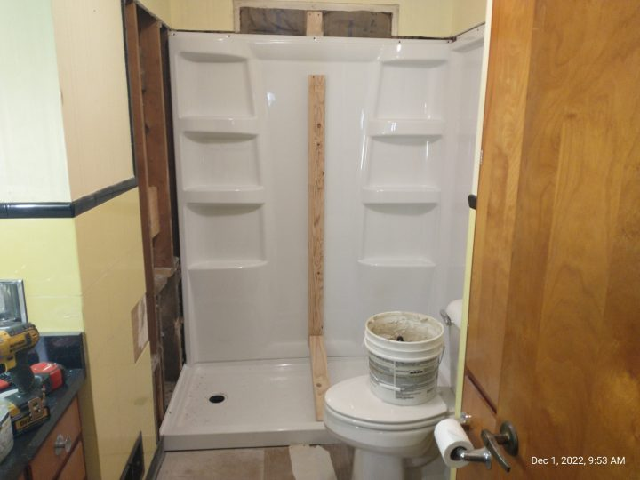

When we sold our motorhome last year, it was because we decided that we were going to live the lifestyle of Snobirds instead of RV Nomads.
We really enjoyed the six years or so we were traveling the country working in RV parks and government campgrounds. Not only did we travel extensively, but we met so many wonderful people along the way, many whom we are still friends with.
But it made sense to sell our Airstream motorhome rather than have it sit here on our site in Arizona and let all that diesel motor muscle go to waste when some new owner could be having the thrill of driving her cross country.
It so happened that a neighbor of ours here at Rovers Roost in Arizona was going to move back home to Albuquerque and was offering her 5th wheel trailer for sale.
We jumped at the chance. It’s a 1996 Newmar American Star 30′ 5th wheel trailer. Nearly 30 years old and not having been out of this park in the last 8 years, she shows her age a little, a lot more on the outside than inside.
There’s the summer heat (up to about 115 deg) along with the intense cloudless sky, combined with daily winds blowing up the desert dust that had pretty much taken a toll on the old girl.
1996 Newmar American Star 30′ 5th wheelFaded and cracked decal graphics
But inside was good. Jimmy and Kathy were the original owners (We have the letter from Newmar welcoming them to the “family”) and since there was no smoking or children in the rig, it’s in pretty good shape.
We did get rid of the hide-a-bed couch and two recliners and replaced those with new furniture. We were able to get the carpet cleaned by a professional, replaced a couple light fixtures, and that’s about it for the interior.
The exterior however is a different story. The molding vinyl is the color of desert dirt, cracked and brittle. The caulk along the edges of the molding is dirty and the decal colored stripes are faded, cracked, and brittle. Trying to remove these old decals with a heat gun and plastic scraper is impossible.
Old brittle trim moldingCracked and faded decals. Note the desert dust stuck to the caulk around the windows
So to brighten things up I ordered a 100′ roll of 5/8″ molding vinyl insert.
Using plastic scrapers from Harbor Freight along with paint thinner followed up with a Dawn Dish Soap solution, I was able to dissolve and scrape away most of the old butyl and/or silicone caulk.
This shows the molding with old vinyl insert removed and new installed
Although I tried to remove the decals, they were just too old and brittle, my only choice was to paint.
Kathy and I chose a color scheme that we think closely represents our southwest desert surroundings.
The dark brown bottom stripe represents the desert soil with the next stripe up referring to the blowing desert dust glowing a deep gold as the setting sun shines through.
The center deep green stripe reminds us of the various species of cactus that are everywhere around us while the bright orange strip shows off the beauty of the western setting sun with the brilliant blue stripe showing off the crystal clear cloudless Arizona sky that we can see for miles and miles.
As of this writing I still have the two top stripes (the ones that run through the window) to paint
It’s 6:30am, actually a sleep-in day for me because when I’m working (driving) for the county I’m up at 4am.
We assumed surgery would be scheduled early just like in the past for my rotator cuff surgery and the left hip, but when they called Friday they told me to arrive at 11am.
So here I sit.. no breakfast.. no coffee.. in fact nothing by mouth since 6pm last night per their instructions. It’ll be 20 hours or so by the time I’m out of surgery and in post-op.
That’s ok, although my stomach will be grumbling and my mouth will be like sandpaper … I’ll eventually have a good hip with great rotation and no pain to look forward to.
I’m ready to get this over. I’ve got my cane, I’ve got my walker, I’ve even got the elevated toilet seat with grab bars to help me as I recuperate.
Just last week we had the old cast iron porcelain painted bathtub pulled out and replaced with a nice new walk-in shower.

During installation of the walk-in shower
In the title of this post I mentioned the robot. If you’re curious how this works, take a look at the video below. It’s really fascinating how this thing works along with the doctor.
For those of you who know me at all, you know that I’m not one to sit still any too long. Although I don’t consider myself as one who’s “physical” (sports/walking etc.), I do have a need to do something – I can’t just sit around watching TV all day.
So when my hip surgery was finally scheduled and I made the decision to take the whole month of December off work, one of the first thoughts was “what am I going to do with myself all that time?”
I knew I’d have 2-3 days doing a lot of nothing immediately after surgery. I’d be using a walker most of the time those days making trips back and forth from the bed, to the bathroom, to the recliner, and back to bed.
But after those first few days I’d have physical therapy scheduled 2 or 3 days a week to help keep me occupied. I’m going to get PT at the local hospital. I prefer that to having the therapist coming to our home because I feel the professionals at the hospital have all the equipment at their disposal, they have to record everything on their laptop, and since there are other patients and therapists in the room (including their boss) I just think I get a better all around therapy session. Besides, the way I look at it, it’s my Social Event for the week!
But aside from the PT, since I’m a licensed Amateur Radio “Ham” Operator, I knew that I could take advantage of this time to allow me to play a little radio and work on some of my DX (distance) contact awards. It’s always fun to get a new QSL (acknowledgment) card from another country confirming our contact and conversation. Here’s one I just got from the Netherlands.
QSL card from a Belgian HAM operating portable from the NetherlandsThe operating location is the island outlined in red dots
I realized pretty quickly that my Man Cave or “shack” as we hams call it gets cold during Ohio winters. It’s a small workshop which is just off the 2 car attached garage. It’s a great place to have a shack (or workshop) because it’s on the main floor (no stairs to climb) and I can make all the noise I want and not disturb the XYL (wife) but the disadvantage is that it’s not heated so the inside temp is typically only 3-5 degrees warmer than the outside temps.
Now logic says “insulate it” but my surgery is next week and I just knew I wouldn’t have time to remove all the shelving, workbench, cabinets, and drywall to install the insulation and then put everything back together again in time.
The WB8BHK radio “shack” in the workshop off the garage
So I felt the answer to my problem was NOT to install an electric heater (high utility bills) but instead install hardware and software so that I could operate the radio from my recliner in the living room. So now I have my laptop computer with me in my recliner and I can operate using a small boom mike/headset. SWEET!
Here’s the user interface on my laptop. I can work the world from my recliner!
As the month of December goes on and I feel like doing more and more, I do have some projects that could wait until spring but that I just might get started early. We’ll see …
Kathy helped out a little at a Christmas Sale this past weekend at one of the local fire halls where she came home with a few goodies. Since we’ve been on the road for the last six years, we didn’t have any Christmas decorations. She’s had fun setting up and decorating the tiny tree and she got her nativity set back out of storage at our son’s home so she got that all arranged today.
Our little tree and Kathy’s Nativity under the tree
We’re looking forward to a comfortable and cozy Christmas season. We wish you the same.
As I detailed in that post, I needed to hotwire around the transfer switch in order to get power to the coach while I waited to get the new one.
The transfer switch was made by Intellitec and I found that part number (the 300 model) is obsolete. But after talking with Chris at M&M RV Electronics (www.mmrvelectronics.com/) in Ohio I found that the new model 400 was available. Once we got to our winter RV site in Arizona I ordered the 400 from M&M.
This blog post along with the You Tube video (below) explains just what the transfer switch is and how it works (for those of you who might be interested!)
It’s really a very simple device consisting of (3) four post terminal strips, (2) double pole – double throw relays (with 110 vac coils), a small circuit board that is a 15-second delay circuit, and the enclosure.
Each of the three terminal strips have four screws. One for ground, the second for hot leg one, the third for neutral, and the fourth for hot leg two.
Terminal strip one (farthest to the left) is wired to the onboard diesel generator
Terminal strip two (in the center) is wired to the shore power and,
Terminal strip three (far right) is wired to the coach 110v power in.
The only purpose of the assembly is to automatically select EITHER shore power or generator power to supply 110 vac power to the coach.
When there is NO power applied from the shore power connection and the generator is NOT running, the two relays are both in the de-energized position and all four contacts (two on each relay) will pass power (when applied) from the shore power cord to the coach. The relays will stay in this position (de-energized) and each of the four relay contacts (GND, Line1, Neutral, Line2) will provide continuity from shore power to the coach.
If/when the generator is started the small circuit board in the upper left corner starts a 15 second countdown. The purpose of this delay is to give the generator time to come up to full operating speed. After the 15 second delay, the two relays on the board are then energized and power is switched (on all four contacts) from shore power to generator power.
As long as the generator is running these relays stay energized and power to the coach is supplied from the generator (even if shore power is still plugged in and energized).
When the generator is powered down, the relays once again move to the de-energized position and power is once again passed from shore power to the coach.
The video below gives a better visual of how things work.
Genset Auto Transfer Switch Function and Operation
I’m glad you stopped by to read this post and watch the video, I hope you found some value here.
Thanks again and be safe out there .. we hope to meet up with you down the road!
It was about 8:30 at night, we were watching one of our favorite Netflix pix on TV and “poof” out went the 110v to the coach. All the 12 volt circuits were still working. I looked out the window, didn’t see any lights on at the neighboring camp site – guess the whole campground must be out.
What to do? Go to bed – what else? Since we’ve got a couple hundred amp hours worth of battery I could’ve turned on the inverter and finished the show, but what the heck.
In the morning I saw that the gentleman cleaning the bath house had arrived and took a walk down to see if he knew anything about the power outage. He knew nothing about it and further … the lights in the bath house were lit!
OK now it’s time for me to get to work and investigate the problem. Always start with the easiest (or most obvious likely) suspect component first.
Check the park power pedestal. Turn the 50 amp circuit breaker on and off to reset it if needed.
Follow the power cord to the EMS (electrical management system) and check to see that the digital display (or LED’s) are reading correctly with no errors.
Check the 110v circuit breakers inside the coach (my Square D panel is at the foot of the bed). Turn off and back on each breaker to assure it is reset.
Locate the converter/inverter/charger and check to make sure the circuit breakers have not tripped here.
So at this point we’ve checked all the easy suspected problem areas without having to remove any panels or take out our voltmeter to do any further checking. Now it’s time to get into the nitty-gritty.
Progressive Industries EMS
EMS display shows adequate power with no errors
110v breaker panel at foot of bed
Inverter shows no tripped breakers
So at this point we know the pedestal power is good because the Progressive Industries EMS is showing adequate voltage on each of the two legs with no error codes.
We know that the 110v circuit breakers at the foot of the bed are all switched ON and we know that the GFCI circuit breaker (in our case in our bathroom at the wash basin) has not tripped.
Our next step is to remove the cover on the inverter that will allow us to gain access to the terminal strip where I can take a couple quick voltage checks. The terminal strip has (6) screw terminals. Three are for the input Line 1, Line 2 and neutral and the other three are for the output Line 1, Line 2 and neutral. A quick check with the AC voltmeter (that every RV’er should have in their tool bag) shows no input to the inverter.
So what is between the EMS and the inverter?
On our coach (and most others) we find an automatic power transfer switch. The purpose of the Transfer Switch is to feed 110v power to the coach from EITHER the shore power pedestal OR the onboard diesel generator. There is a circuit board inside the enclosure that has three terminal strips, two large relays, along with time delay circuitry to make sure that the incoming power from either the shore power or the generator is up to adequate voltage before energizing the appropriate relay. Only one source is allowed to feed the coach at a time.
Once I took the cover off the Transfer Switch, the answer to my problem was obvious. One of the relays had a burnt wire coming off it and connecting to the circuit board. Evidently the screw attaching the wire had worked loose (It’s a 20 year old rig after all) which caused an increase in current draw and subsequent heat that ultimately burned the insulation off the wire and also burned through the circuit board.
Trransfer Switch Cover
Inside the Transfer Switch
Burned wire connector on relay
Unfortunately, we are camping over an hour south of Rapid City SD where there is MAYBE an RV shop that might have a transfer switch in stock but it’s very likely a different brand or newer model that may not have the same physical characteristics as the Intellitec model that we have. I decided I’d look online to see if I could even FIND the Intellitec and lo and behold, they still do make it! This would make replacement a LOT easier, same wire lengths, same screw holes, etc.
Challenge is, by the time I get it ordered (today is Sunday of course) and the supplier ships it to us here in Hot Springs, we will be gone as we are leaving on Friday.
I decided my best course of action is to manually re-wire the connections (removing the generator from the circuit) and then order the new transfer switch to arrive at our park in Arizona sometime after we get there November 1st.
I removed the four wires from each of the terminals for the SHORE POWER and COACH and connected (using split bolts) the red to red, white to white, black to black, and ground to ground.
I then carefully taped all exposed metal connections with electrical tape to make sure there were no accidental shorts.
Wires removed from switch
Split bolt pkg
This is the split bolt
The completed diagnosis and temporary repair awaiting the new transfer switch
This didn’t happen all of a sudden. I blame myself for not catching it earlier. Kathy and I have both noticed over the last month or so that occasionally while watching TV, the screen flickers for an instant. The screen actually goes black momentarily. It’s not enough to reset the clock on the microwave, but it does flicker.
Also, about a month ago when I was in the basement compartment where the power comes in to the coach, I noticed a slight hum from the transfer switch box. I figured it was one of the relays humming and I know that relays will do that from time to time. I should have taken the cover off to investigate further at that time.
About a year ago I DID have the cover off and I checked all the screws on the circuit board terminal strip(s) where the wires come in to the board. I tightened them as needed. What I did NOT check however were the screws on the relays. Perhaps if I had checked and tightened them back then, this problem would not have occured.
Oh well …. live and learn, eh? Just thought I’d share with you one of the recent problems we’ve had and my troubleshooting approach to get to the answer.
Yes that’s right … truly unlimited streaming for just $25 a month. It CAN happen and Kathy and I have been taking advantage of this great value for a full year now. And you can too.
And when I say $25 per month I mean TOTAL cost. No additional taxes, fees, or hidden charges. And there’s no contract either – quit the service whenever you want.
The service is called Visible and it’s owned by and operates on the Verizon 4G network. Wherever you can get Verizon service you can get a Visible signal. NOTE: This statement is accurate for the U.S. only – Visible service does not work in Mexico or Canada.
There’s no special phone or hotspot to buy – you may well be able to use what you already have, just swap out the SIM card with the new one. If for some reason your phone is not compatible with the Visible service, don’t despair as they have plenty of varied inventory on their web site at competitive prices.
Don’t have a hotspot? We bought our ZTE model R2 Android phone from Visible for $19. Although this is actually a cell phone, we use it exclusively in hotspot mode 24/7. It just stays plugged in setting on a table next to our TV. It connects to the TV and our other digital devices in the coach via it’s own built-in wifi.
We have no indoor or outdoor TV antenna, no cable, no satellite dish. The Visible hotspot is our ONLY television and internet provider.
With Visible you get unlimited data and no throttling of data speeds. There are two caveats however.
When you are using a device in Hotspot mode (providing internet data to TV or other devices) the speed is throttled down to 5mb/second. We have found however that this is NOT a problem. We can still stream every day whether it’s Netflix, Amazon Prime, You Tube, You TubeTV, PBS, CBS, or any other streaming service we’ve tried. Occasionally there are a few seconds of buffering in the very beginning of any stream, but once this goes away, the rest of the show or movie is fine.
The pictures below show our hotspot data usage over the last three months. You can see that we average approximately 170 gigabytes of data per month.
158 GB Used
183 GB Used
163 GB Used
Caveat #2. When using a device in hotspot mode, there can only be one external device connected at a time. To get around this limit we purchased a small $39 Wi-Fi extender/repeater/router. Here’s the link to that particular router we bought. Connect this little router to your new hotspot and then connect multiple digital devices (TV, computer, tablet, etc.) to the router.
How does the $25/month price work? By utilizing what Visible calls “Party Pay”. When you sign up as a new customer the standard price is $40/month and you get a $15 credit as a new customer first month credit bringing your first bill down to $25. From then on it’s $40 unless you take advantage of their Party Pay program by inviting others to join Visible. For each other person that joins your “party”, you each get $5 off your monthly bill. Get 3 folks to join your party and your bill (and each of theirs) is now down to $25/month.
Here’s the link to Visible’s Party Pay web page so you can see for yourself how it works.
And getting others to join your party is easy-peasy because there are Facebook groups and other sites where Visible users post the link to their party inviting others to join. Kathy and I now have three Visible devices with three “guests” in each party so we pay a grand total of $75 per month for 3 devices that provide cell phone service and unlimited data streaming. Pretty good, eh?
I’ve found that if, for any reason someone decides to drop out of one of my parties, I get an email from Visible. I then re-post the link to my party on the Party Pay Facebook group and within minutes I have a new member bringing that monthly bill back down to $25/month!
So what’s the downside? There are no Visible stores and you can’t get any Visible service by contacting Verizon either by phone or going into a Verizon store. You can only communicate with Visible Customer Service online either using their app or on their Facebook page.
Before switching to Visible, we were paying Verizon about $180 per month for service on our three devices (2 Android cell phones and a Verizon hotspot) with a data cap of 25GB/month before they cut the transfer speed to virtually nothing. It was nearly impossible to even check our GMail without severe buffering making us wait what seemed to be forever.
By the way, there’s nothing in this for me. We are not paid to promote Visible service nor do we receive any compensation for new customers other than our Party Pay groups I’ve already talked about. I’m sharing this because I know the service works and just trying to save you some money.
I’m curious … what are you paying for cell service and do you think you might save money by switching to Visible?
Let me know if you have any questions – always glad to help others save money and make life a little easier.
I recently wrote a post telling you about the TSD Logistics Diesel Fuel Savings program. If you missed that post you can read about it here.
Just received some good news from TSD – “We have some great news. TA/Petro has come back to us with some great rates. They will likely be the lowest price out of all of our vendors.”
They are also continuing to work with other fuel vendors to add more opportunities for us to save on diesel fuel at the truck pumps.
“We have also added Kwik Trip and Kwik Star to our discount program with 10 cents off per gallon. We are reaching out to others now to see if we can increase to some of the smaller chains. Our current discount network is TA, Petro, Loves, Road Ranger, SAAP Brothers, Ambest, Kwik Trip and Kwik Star.”
I’m going to type up this list of fuel vendors and keep it within arms reach from the driving position so I can be on the lookout for these suppliers.
If they are not already there, all of these suppliers will soon be merged into the TSD/EFS app that we use to find the best price in our area.
The EFS (Electronic Fuel Systems) app is showing that the Loves along I-71 at Bellville, OH has the lowest price on diesel near me.
Here’s a clip of the Loves web site this morning showing their current pump price on diesel at $2.42/gallon.
Not a bad savings, ($.77 per gallon) eh?
If you haven’t already started using the TSD Logistics RV Fuel Savings Card, I encourage you to take advantage of the savings and the ease of use. Yes, they do charge a nominal fee (10% of the SAVINGS you get) but it’s well worth it.
If you have any questions, feel free to write me here in the comments section below or connect with me on Facebook at https://www.facebook.com/herbnkathyrv and I’ll be glad to share my experiences with you.
I know right now very few of us are traveling the way we were a few months ago but “this too shall pass” and while you’re sitting still now is a good time to take a few minutes to sign up for the program. Besides, right now you know where you’re going to be over the next few weeks … so they’ll have a good address to send you the EFS card.
It’s Saturday Feb 8th and we left Rovers Roost this morning and made our way 3 hours West to Quartzsite (AZ). We came over here because our new lithium batteries weren’t acting the way I thought they should.
Brian Boone installed our solar panels, controllers and inverter. We could have bought the batteries through him when he installed all the other, but it just wasn’t in the budget at the time.
But when we went to the Big Tent RV Show last month, the sale price on these batteries was just too good to pass up, so we bought 2 and I installed them myself. They market them as “Drop in replacements” … We’ll, not exactly the case.
When we spent 10 days in the desert at the big show, we were still using our Trojan T-105 Deep Cycle Lead Acid batteries. The solar and the batteries played well together and we never once had to fire up the generator.
But once we got back to the Roost and I swapped in the new lithiums, things always seemed a little screwy. I was constantly watching the volts, the amps, the capacity (in percent) and the amp hours from full. And the math just wasn’t adding up!
Time for some professional help. I called Brian for help. He and Sue are still dry camping in Q, so we drove out here to have him take a look. What Battle Born doesn’t tell you is that there are more than a couple settings that need to be changed when converting from lead acid to lithium batteries.
Brian made the changes and all seems to be working well now. I’ll monitor things tonight and in the morning and let him know before we head outta town.
Our camp site for the night at Road Runner BLM land a few miles south of Quartzsite
We’ve got the windows open, no fans on and a nice breeze moving through the coach. Kathy’s taking a little siesta on the couch right now as I write this. We’ve decided we’re going in to Silly Al’s for pizza tonight.
Tomorrow (Sunday) we’ll head on down SR 95 to Yuma where we will spend the night at the Escapees KOFA Co-Op park for the night, then Monday morning head West through El Centro CA to Potrero County Park
Potrero is where we will meet all the others going on the caravan to Mexico. There will be 27 rigs total. Kathy and I are on the parking team so we need to get into Potrero a day early so as to be able to be ready bright and early to greet and park the folks coming in.
We’ll spend a night or two at Potrero before we caravan into Mexico.
Much more on that later. I know our Visible phones won’t work in Mexico, so I’m going to try to buy a SIM card in Mexico. Not sure how pricey it’ll be, so it’s not clear on how many pictures I’ll be able to post.
But rest assured you’ll hear from us again. If not sooner, then later!
Well, we all have gauges of some sort on our vehicle that tell us the REALLY important things like “You’re Outta Gas!” or “I’m getting too hot!“, but there’s a lot more information that all our newer (since 1996 or so) vehicles have that can be extracted from the on board computer (known as the Engine Control Module) and, if you have the right device, then display that data on a screen so the driver can see and monitor the engine load and performance. On diesel trucks and motorhomes, this data is sent by the ECM to a “Deutsch” connector. On pick-up trucks and passenger cars they use an OBDII (On-Board Diagnostic) connector.
One such device for diesel engines in Motorhomes is BLUEFIRE FOR MOTORHOMES.
I discovered this device and it’s associated app while visiting the Quartzsite “Big Tent” RV show in January of 2019. Their display of the user interface caught my eye and so I went over and talked to Mark Fredrickson who, as it turns out is the developer of both the plug-in adapter and the free app available for Apple, Android devices and Windows 10 computers.
This device (called the adapter) plugs into your diesel vehicle Deutsch Connector. In our case, there is a round 6-pin Deutsch connector mounted just inside the rear “hood” of our coach just over the top of the radiator (labeled Diagnostics). There is another duplicate connector mounted under the dash. These are the connectors that the mechanic would use for diagnostic purposes.
This is what our (6 pin) adapter looks like
The really sweet thing about Bluefire for Motorhomes is that the adapter is BLUETOOTH which means the adapter talks to your phone/tablet/laptop wirelessly and this means that you don’t have to deal with any unsightly wires coming out from under the dash AND you don’t need to provide any power to the adapter since it gets it’s own power from the Deutsch connector.
The BlueFire for Motorhomes App is free and can be downloaded and installed from Apple Tunes, Google Play, or the Microsoft App Stores. It will run completely in Demo mode so you can get a feel for it’s capabilities before purchasing an Adapter.
The cost of the adapter starts at $150.00 (for a 6 pin Android/Windows adapter) up to $190.00 for the 9 pin (newer motorhomes) Android/Windows/Apple adapter. You will need to look at your Deutsch connector to see if it’s 6 or 9 pin and also decide what platform you are going to run it on (Apple/Android/Microsoft).
If you need to use Bluefire on a pickup truck or other vehicle with an OBDII connector, then order the appropriate adapter from the link in the box below.
Since our motorhome is a 2002 Airstream on a Freightliner chassis with a CAT 3126 engine and a 6 pin Deutsch, we were able to purchase our adapter for $150.00
Since the app is FREE, I urge you to download the app and play with it in DEMO mode. This will allow you to learn about all the various settings and learn about how you might want your “dashboard” to look like. To use the app in DEMO mode, from the main menu (or control panel) click on SETTINGS & then UN-check DO NOT SHOW DEFAULT DATA.
Your custom dashboard is completely customize-able. You select which gauges you want displayed, what style the gauge will be (circular, text, or linear), what colors you want, and all gauge placement. Here’s a shot of how I set up my dash for our motorhome.
My Bluefire dash on my Galaxy 8″ tablet (in demo mode)
You can see that I have 8 circular gauges, 8 text gauges, and 3 buttons on my dash. And I still have room on the screen to add more. I can even place a dynamic map on the dashboard that works off the GPS.
This is the tablet I’m using for Bluefire. My laptop was too big. I would have to set it on the dash and then I couldn’t reach it from the driving position. My Android phone is too small and it mounts on a long flexible neck that tends to bounce around during travel. This would make it too had to view the gauges, so the 8′ tablet was the way to go for me.
Here’s the base that I bought to mount the tablet. I screwed the mount right into the dash just to the left of the back-up monitor left of the steering wheel. It’s a very solid mount and does not allow the tablet to jiggle or bounce around as you travel down the road.
In the screenshots below you will see just how many parameters there are that the ECM sends to Bluefire and you can make gauges on your custom dashboard displaying ANY of these parameters.
The Control Panel when you first start Bluefire
Be aware that not ALL motorhomes ECM’s will transmit ALL of these parameters. My coach is an older (2002) and there are a few pieces of data that just don’t come across (like coolant LEVEL) because my coach doesn’t have a sensor that feeds into the ECM for that.
I DO however have a LOW WATER light and buzzer on the Freightliner dash that warns me … which by the way I found DOES work as we were climbing a steep hill, the coolant in the reservoir shifted to the back thereby exposing the sensor and setting off our LOW WATER alarm!
It’s very easy to operate. Here’s how I turn it on and start to use the system.
Turn on my tablet, enable Bluetooth and open the Bluefire app. I have my settings set to NOT bring up default values when not connected (ignition off). Start the engine. Push CONNECT on the app control panel. Push “TRIPS” on app control panel and enter the name of my trip that I’m starting. Push START TRIP. Push one of 3 buttons on Control Panel (either DASHBOARD, DRIVE, or REPAIR) to view graphical data being sent from the ECM.
DRIVE and REPAIR each have multiple screens (you can scroll up and down) that show you every possible parameter that your ECM might be sending to the adapter.
Using the TRIP function all the driver has to do is start and connect the app to the adapter, enter the name of the trip, (i.e. Chicago to St. Louis) and then push START TRIP. The app and the ECM do the rest of the work. When you stop for fuel, push FUEL FILL-UP – the app will ask you if it’s a total or partial fill. At the end of the trip push STOP TRIP and you’ll see the results on-screen and a report will be emailed in a csv spreadsheet format. The spreadsheet is amended with another ROW after each trip so all your trip(s) data is automatically saved in a nice compact format for easy retrieval at any time in the future.
Screen shot of the TRIP screen.
Here is the link to purchase the Bluefire For Motorhomes Adapter from our Amazon Associates Page. If you order from Amazon (through this link) or the BUY NOW button below, then we will be paid a small fee from Amazon and the purchase doesn’t cost you any more.
Here’s a link to their Getting Started Document that’s 23 pages long and really explains a lot. I don’t think this document was available when I started using Bluefire or maybe I just never saw it — I learned by experimenting.
For a quick look at some of the App pages follow this link to the Bluefire web site.
If you’re not already subscribed to this blog, you can easily do so by scrolling up to the top of any page and entering your email address in the block on the right side.
You can also subscribe to our YouTube channel (herbnkathyrv) on You Tube.
If you’re curious (at any time) to know where we are at that moment then click the button at the top right of this page labeled “See Where We Are Now“.
Any questions, I’ll be glad to answer them as best I can. Please put questions and comments in the comment section below rather than email so that others can benefit from our conversation as well.
We’d love to hear from you. If you scroll all the way down to the bottom of this page, you can send us a note. Again, thanks for riding along. ’til next time – safe travels.